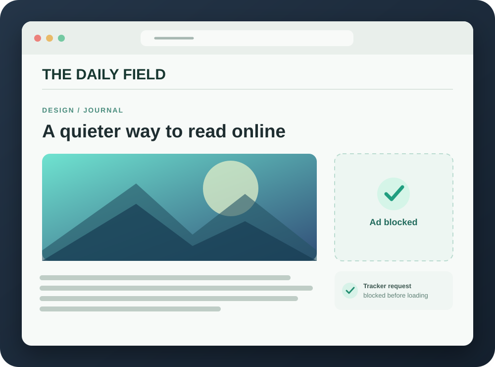

Block known ad networks
127 domain rules target third-party requests to selected advertising and tracking services before they load.
SadeBlock gives Safari a quieter reading experience by blocking requests to known ad and tracking services. Native rules do the work. Your browsing stays yours.

A focused set of Safari rules reduces common ads and trackers while letting the content you came for stay in view.
127 domain rules target third-party requests to selected advertising and tracking services before they load.
Two cosmetic rules hide selected ad placements and site-specific clutter.
WebKit compiles the rules and applies them in the browser. The companion app checks status and reloads filters.
SadeBlock does not read your history, log requests, run telemetry, or send browsing data to a server.
The rules are bundled with the app and can be inspected in the open-source repository.SadeBlock is currently available as an open-source Xcode project for macOS 13 or later.
Download or clone the repository, then open SadeBlock.xcodeproj in Xcode.
Choose the SadeBlock scheme and My Mac, then run the app. For a signed build, configure your Apple development team for both targets.
Open Safari Settings → Extensions, enable SadeBlock, then refresh your tabs. Local unsigned builds may need Safari’s developer setting.
Need more detail? Read the installation guide. This early version uses a small, manually maintained ruleset; first-party and in-video ads may remain.